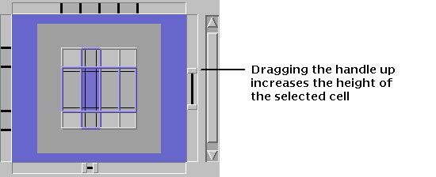
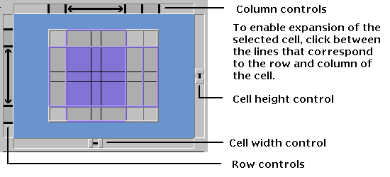
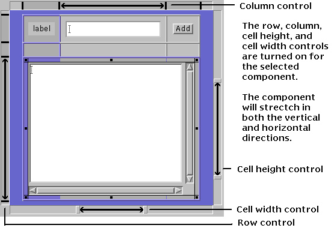

To enlarge or shrink a component within a cell in the grid or to expand a cell across a row or column, see Resizing a Component.
 To change cell height and width:
To change cell height and width:

The cell height control stretches the cell vertically. The cell width control stretches the cell horizontally. If the cell contains a component, the component is resized accordingly.
You can also use the width and height controls to reduce the size of a stretched cell. (Each component has a minimum height and width, below which you cannot resize.)

The lines on the left side of the layout window correspond to each row in the grid; they are the row controls that enable you to control the height of the individual rows. The lines on top of the layout window correspond to each column in the grid; they are the column controls that enable you to control the width of the individual columns.
 To horizontally resize a component:
To horizontally resize a component:
The preceding figure shows resizing behavior set for a Single-line TextField component. Since only a single line of characters can be displayed in this component, it does not make sense to allow the component to resize vertically. You might try this procedure yourself and view the layout in Preview mode. Try changing the size of the layout window to see how the Single-line TextField changes.
 To vertically resize a component:
To vertically resize a component:

The preceding figure shows resizing behavior set for a Multi-line TextField component. It is reasonable to allow this component to resize both horizontally and vertically. Try previewing this layout and see how resizing the layout window affects the multiline text.
The interaction between the row/column controls and the cell resizers provides you with maximum flexibility in controlling resize behavior. Try creating a small grid with a variety of components and experiment with these controls.
 See also:
See also: